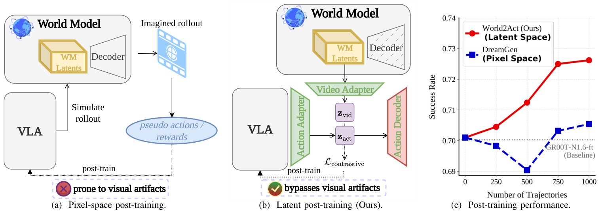
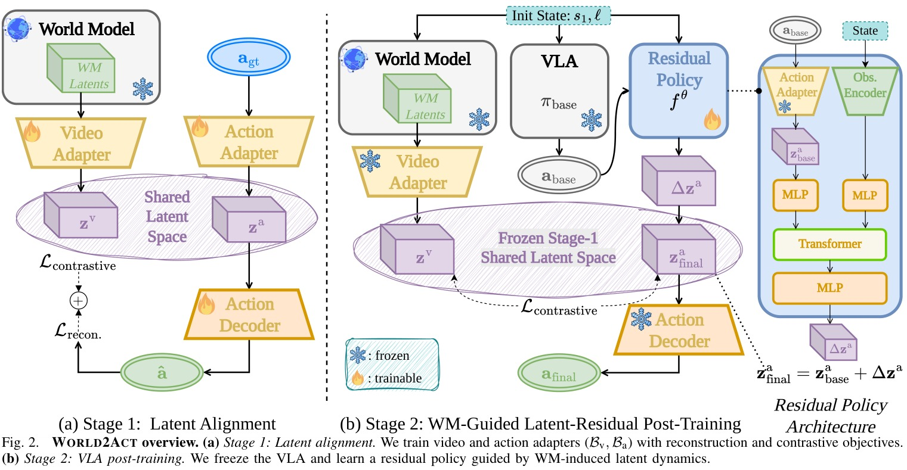
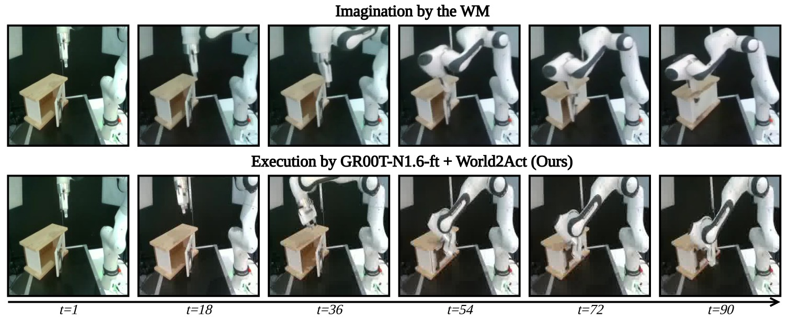
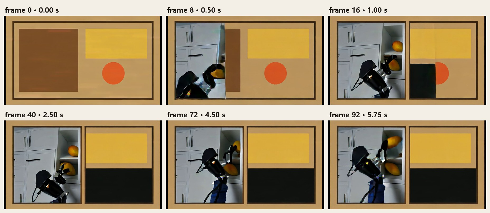
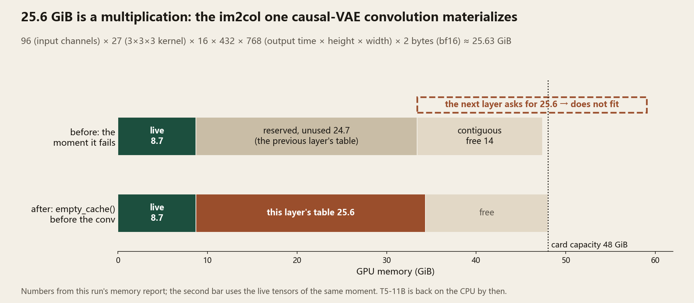

World2Act · 2026.11.01
The World Moves by Itself; the Hand Has to Learn Another Language: World2Act on a W7900





Show a robot a video of "take the mango out of the cabinet" and what it sees is pixels changing. To actually reach out, it needs to know how its joints should move. Between the two sits a layer of translation. World2Act bets that this translation does not have to start from scratch. A video model that has already learned "what the world looks like a second from now" already carries actions in its internal state; nobody has learned to read that language yet.
The code builds on NVIDIA Cosmos Predict2 and is licensed Apache-2.0. This release covers two stages of training: first fine-tune the world model, then train an action variational autoencoder on top of the frozen world model. Using that action latent to post-train a vision-language-action model is, the authors write, left for later. The simulation data and the private checkpoints are not in the repository either. The documentation has an AMD path, and says in the same breath that GPU training and inference were not run during that cleanup. The Dockerfile and the cu126 extra dependencies are still NVIDIA's. So the hole the repository leaves is not another idea but a run that has not happened yet.
The bet: let dynamics teach actions
The usual approach trains a policy directly on videos annotated with actions. Annotation is expensive, and the clips the world model has seen where "only pixels change" go unused. World2Act turns the order around. First there is a video world model whose job is denoising: given the current frame and a sentence, draw the next short stretch. This model does not output torques; it outputs what the future looks like. The action is hidden in "why the picture turns into this."
So the second step freezes the world model and trains only a very small action model. Action chunks go into a variational autoencoder, are compressed to a latent and decoded back to actions, with mean squared error as the reconstruction loss, counted on both positive and negative samples. Meanwhile, a video bridge network looks at the world model's own latent frames and extracts a vector of the same dimension with 3D convolutions. The two sides are aligned with InfoNCE at a temperature of 0.07: what the bridge sees as "these dynamics" should land close to the mean the action encoder gives. The world model is not updated. It only serves as the teacher, telling the student what this future looks like in its eyes.
The sharp end of the bet is where the supervision comes from. Pixels are too noisy and joint angles too narrow. The world model's latent space is just right: to draw the next second correctly, it has been forced to encode "which way the hand is going, and whether the object will follow" in its features. The action latent does not need to rediscover physics; it needs to learn to point at those features with numbers a motor can execute. The reconstruction loss makes sure the number can still turn back into a trajectory; the contrastive loss makes sure it points at this video and not just any video.
The cost is just as clear. If the teacher draws wrong, the student takes the wrong dynamics as the definition of the action. So the first stage still has to fine-tune the world model on videos from the target domain, rather than use a generator that has only seen internet video as the teacher. The fine-tuning in this release eats simulation videos and text embeddings, and the action stage additionally needs paired robot actions. The authors have released neither data set yet.
The action model is actually tiny
The action variational autoencoder is a 1D convolution over action chunks of length 4, with a 32-dimensional latent sampled by reparameterization. The video bridge is a 3D convolution over the world model's latent frames, not raw pixels. The optimizer is AdamW with a learning rate of 1e-4, weight decay 1e-2, and betas of 0.9 and 0.95. This stage is single-GPU by design: once the world model is frozen, only the encoder, decoder and bridge are trainable, and there is no reason to split data parallel any further.
The other path is fine-tuning the world model itself, the default --training_mode wm. What gets trained is the denoising network, with simulation videos and precomputed text embeddings as input, and the experiment name carried over from Cosmos, predict2_video2world_training_2b_groot_gr1_480. Upstream's launch comments already say single process, with fused attention turned off. The two paths share the same DiT; they differ only in whose weights are allowed to move.
Post-training the larger vision-language-action model is not in this version of the code. So "reading actions out of the world model's dynamics" currently stops at the reading: the latent has to reconstruct actions and line up with the video's latent frames. It has not yet been put into a policy that closes the loop on a task by itself.
The teacher is a 2-billion-parameter video diffusion model
The teacher is Cosmos Predict2's 2B Video2World. The backbone is a diffusion transformer, sampling uses rectified flow, the resolution is 480p at 16 frames per second. The text does not go through the very large Reason1 encoder. The default is T5-11B, hidden size 1024, sequence length 512. Reason1's embedding width runs to the order of a hundred thousand, which is a different conditioning and a different memory bill; this inference path does not choose it.
Pixels first go through a causal 3D VAE of the same lineage as Wan's. Channels climb through 96, 192 and 384, with causal padding in time: a convolution can only see the current and past frames, never peek at the future. A 480p 16:9 conditioning image is resized to 432×768 inside the pipeline before it enters this encoder. One generation takes 35 denoising steps in latent space, with a default guidance strength of 7. The condition can be one image or five frames of video. This run used one image.
On paper the memory budget adds up. Upstream records about 32 GB for 2B Video2World inference. A 48 GB card fits the 2B model but not the 14B. T5-11B in bfloat16 is about 22 GB, the DiT and VAE weights take a few GB more, twenty-seven or twenty-eight GB in all, leaving twenty GB for activations. On NVIDIA's cuDNN that leftover really is left over. With the convolutions on gfx1100, a giant unfolded table spends all of it at once. More on that later.
The repository ships four inference entry points: RoboCasa atomic actions, full RoboCasa tasks, LIBERO, and a real Franka. They share the same pipeline and differ in how the prompt is assembled and how the camera is cropped. The validation picked the first, because it needs no simulator in the loop: one conditioning image and one sentence are enough to really run the model.
Rectified flow walks a straight line in latent space
The diffusion here is not "add many steps of noise, then guess the noise step by step." Video2World uses rectified flow: a straight line connects the clean latent and pure noise, the network learns the velocity along that line, and sampling walks from noise back to data along the velocity. The 35 steps are 35 sample points on that line. The default guidance strength of 7 means pushing apart the two velocities "with this prompt" and "without this prompt," so that "take the mango" stands firmer than "the arm waves around."
The conditioning frames decide how much already-happened reality the network can lean on. An image is 1 frame; a video can be 5. Pixel frames and latent frames convert at a temporal compression of 4, with a spatial compression of 8. A 432×768 frame goes into the causal encoder, and the latent is about 54×96 in height and width. The action stage's video bridge looks at latent frames like these, not the 480p original. The action latent can have just 32 dimensions because what it is aligned to is already an order of magnitude cheaper than pixels. The bridge does not need to see the mango's texture again; the teacher already has.
Reconstructing actions alone means never watching the video
If the action variational autoencoder only reconstructs, it learns a compression that has nothing to do with the image. For the same string of joint angles, the latent can be identical whether or not there is a mango in the cabinet, and the decoder still restores the trajectory. InfoNCE closes this escape route. The negative samples' action chunks also have to be decodable, so the decoder cannot get by on "what common trajectories look like." The contrastive loss demands that the vector read from this video's latent frames be closer to this video's own action mean than to any other's. A temperature of 0.07 pulls this soft nearest neighbor very tight.
So the data has to be paired. One sample has, over the same stretch of time, both the video and text embedding and the actions the robot actually took. The world model runs with frozen weights, and the bridge sees only its latent representation; the action encoder sees only actions. Apart from that 32-dimensional code, the two sides have no other channel. With video alone, the teacher can lecture, but the student has no homework. That is also why this version of the code can publish training scripts and still cannot finish the second stage: the homework has not been handed out.
Four entry points, four ways of saying it
RoboCasa atomic actions cut a long task into short phrases like "reach, grasp, lift." After one segment is generated, ffmpeg cuts out the last frame to serve as the condition for the next, and the hand chains along in imagination. The full-task entry point hands the whole prompt to the model at once and never feeds the frames back in midway. The LIBERO prompt describes the frame as four panes, two of them black, telling the model in advance which two views are empty. The real Franka changes the camera and the body, not the network. All four scripts end up in the same inference program, with the same switches for model size, checkpoint, guidance and seed.
This run took only the atomic-action path, with one image and one sentence, without chaining segments together. Chaining needs ffmpeg, and it needs an environment outside that actually moves. The question to answer was narrower: can this 2-billion-parameter teacher draw the next short stretch of the future on one 48 GB Radeon?
The denoising network sees three things at once
One DiT forward pass looks at the noisy latent, the time position and the text at the same time. The text is first encoded by T5 into at most 512 vectors of 1,024 dimensions; short sentences are zero-padded, and the padding positions take no part in the later alignment. These vectors do not change pixels directly. They go into cross-attention, so every block of the latent can ask: does this description have anything to do with me? The time position tells the network where on the straight line it is. Near the noise end, the velocity field has to pull structure out of garbage; near the data end, it is mostly fixing edges and contacts.
Fine-tuning the world model moves exactly this velocity field. The data is simulation video with text embeddings computed in advance, so T5 is not brought in during training steps. That is very practical accounting: T5-11B is bigger than the 2B model being fine-tuned, and carrying it every step would let the language teacher eat the card's budget first. The action stage goes further: the DiT is frozen, and T5 shows up only when a new prompt appears. Both stages dodge the same cost.
The experiment name predict2_video2world_training_2b_groot_gr1_480 writes this accounting into the name: 2B, video to world, 480p, and GR1 from GR00T's robot data. The name is left over from Cosmos as is. World2Act does not build a new network; what it changes is who gets trained and who stays frozen.
Causal, so the future does not leak in
If the video VAE used ordinary 3D convolutions, encoding frame t would see t+1. During generation that is cheating: a future that has not been drawn yet leaks into the present through the compression. Causal padding extends the kernel in time toward the past only. The first frame has no past, so it is padded with zeros. When one conditioning image enters the encoder, the time dimension first goes from 1 to 3, and those two frames are padding, not the model seeing the future. Later chunks look at one time window at a time, with the window length set by temporal_window, and a cache passes the end of the previous chunk to the next. The whole video stays causal, and the full-resolution activations of dozens of frames never have to be piled onto the card at once.
This design and the memory accident later are two sides of the same coin. Causal chunking saves "computing all frames together." Each chunk by itself is still a dozen-plus frames times four hundred-odd by seven hundred-odd pixels at full resolution. It saves on the whole, not on the chunk. The action bridge works only in latent space and enjoys the layer that is already compressed, so the 32-dimensional alignment looks light. The encoder at inference time gets none of that lightness; it has to push the pixels in first. That is why the validation got stuck in the VAE rather than in the 35 denoising steps: denoising happens in latent space, encoding happens on pixels.
Alignment is not yet a closed loop
A latent that lines up with actions does not mean the robot can do the task. Alignment says: given the teacher's view of a video that has already happened, the actions taken at the time can be recovered. A policy needs the reverse: given the current frame and a new instruction, output the next step, and the frames after it has acted must still match the teacher's imagination. That reversal is the post-training that has not been released: plugging the action latent into a vision-language-action model, letting the policy try things in the world model, then going back to the real robot.
This release draws its boundary very firmly. You can fine-tune a 2B model that dreams, and you can train a 32-dimensional translator next to the dream. You cannot yet take the scripts in the repository and have a robot arm take the mango out of a cabinet it has never seen. Running the validation as a training run would actually overstep: the paired data is not there, and the loss has nothing to go down on. The main path that can run, and should, is inference: let the teacher turn a written sentence into a short video.
The "negative prompt" in guidance and the negative samples in the action loss are not the same thing, and are worth keeping apart. The negative prompt appears in sampling: estimate one velocity with the condition and one with an empty condition, and push them apart by the guidance strength, steering the picture away from "the kind of motion we don't want." The negative samples in the action loss are other real trajectories. The decoder must also reconstruct them, and the contrastive loss must be able to tell them apart from the current video's latent frames. One governs whether the drawn video matches the instruction; the other governs whether the 32-dimensional code has quietly become a dictionary of actions unrelated to this video. Mix the two "negatives" up and you might think negating the prompt could train an action latent. It cannot. Negating the prompt only changes the direction of the teacher's dream; it gives the translator no new words.
The teacher invited this time is still the original Cosmos
The public model-480p-16fps.pt is Cosmos Predict2's base Video2World model, not the version the authors fine-tuned on simulation data. The fine-tuned weights, like the paired actions, have not been released. The inference entry point is firm about 2B: you must give a local weight path yourself. The repository will not pretend it can download a private GR00T version when the checkpoint is missing. On 2B, --gr00t_variant writes this refusal into an argument rather than switching to a different network. What actually gets loaded is the state dict the path points to, with keys prefixed net.; EMA weights are a separate choice.
So a successful generation proves the base. T5, the causal VAE and the 2B DiT, the three pieces, can walk the rectified flow to the end under one given prompt. It does not yet prove that the action latent has learned to take the mango. That step waits for the fine-tuned teacher and actions aligned with video. The base is run first because a student cannot learn from a teacher who cannot draw the next second. The 14B teacher is stronger and heavier, and a 48 GB card cannot host it from the start, so the validation stops at 2B. That is not shrinking the experiment; it is the largest public teacher this card can host. The sampling seed is fixed at 0 in the validation: it only changes the noise at the start of the line, not the network. Run the same prompt again and the difference comes from diffusion's own uncertainty, not from another set of weights. The output is a short mp4, not a score table. This version of World2Act does not ship a ready-made success-rate protocol for RoboCasa, and chaining atomic actions also needs an outside simulator to actually execute the last frame. The video answers only an earlier question: given the first frame of this table and this sentence, is the short stretch the teacher draws connected in time, and does what is in the hand move the way the sentence says? Only once you can read that does it make sense to use the model as the teacher of an action latent later.
The port: compute capability 11 is not Hopper, and 25.6 GiB is a multiplication table
The code has no .cu files of its own. ROCm's PyTorch still calls the device cuda, but torch.version.cuda is empty and torch.version.hip has the value. The port does not change kernels; it changes a few judgments that "assume they are still on NVIDIA," plus one card's real appetite for convolution workspace.
The attention dispatch originally used torch.version.cuda to decide whether this counts as a GPU. On ROCm that string is empty, the compute capability is taken as 0, and the half-precision path then asks for cuDNN attention. On gfx1100 this backend does not gracefully fall back to the next one; it reports that no kernel is available. The capability this card reports is 11.0, that is, Sm110. The number looks "newer than 9.0," so it is easy to read it as a cue to use FlashAttention-3. FlashAttention-3 wants compute capability 90, which is Hopper. 11.0 is not an upgrade of 9.0; it is a different product line. In testing, half-precision SDPA computes with the flash, memory-efficient and math backends, but not cuDNN. The dispatch now uses only those three when there is a HIP version, preferring flash.
Transformer Engine has no ready-made gfx1100 wheel. The official ROCm package targets Instinct. This port uses the ROCm branch of v2.10, built from source for gfx1100 with all three fused-attention switches off: neither CK nor AOTriton targets this card. The build also needed pybind11 and rocm-sdk-devel==7.14.0, the same version as the PyTorch in the image. TheRock puts libamdhip64 and libroctx64 under the Python package prefix, not /opt/venv/lib. Apex's just-in-time compilation looks for -lamdhip64 in that empty directory, and when linking fails it looks like a kernel bug, when the library is just not where it expects. LD_LIBRARY_PATH and LIBRARY_PATH both have to point at those two prefixes. Grouped GEMM also wants to include Composable Kernel headers, which this build tree does not have. That function now simply returns false, and the caller falls back to hipBLASLt. Ordinary matrix multiplies already go through hipBLASLt.
There is also an import that has nothing to do with the algorithm. The Qwen2.5-VL network asserts at the top of its module that flash-attn must be installed. The T5 text encoder file imports this Qwen code unconditionally, so even with T5 in use and prompt rewriting off, the process still dies on "please install flash-attn." The CUDA flash-attn wheel has no counterpart on this card. With the assertion removed the module imports; actually running Qwen's kernels would still fail, and this released inference path does not run them.
Memory was the one real algorithmic problem this time, and it has nothing to do with the paper; it has to do with how convolutions are implemented.
If T5-11B stays resident with the DiT and the VAE, about 27 GB of the card is gone first. Upstream does provide offload_text_encoder: move the text encoder back to the CPU once the embeddings are computed. The switch is right; the implementation is one step short. At construction the encoder records self.device as "cpu". Later the weights are moved away with .to("cuda"), and the string does not follow. encode_prompts still sends token ids to "cpu". The embedding weights are on the GPU, the indices on the CPU, and the error message is very honest. Reading the device from the parameters themselves each time lets the text encoder visit once, write that sentence, go home again, and return the empty blocks in the caching allocator on the way out.
Then the VAE. The causal 3D convolution at full resolution sees a tensor like this: 1×96×18×434×770, bfloat16, with a 3×3×3 kernel. On gfx1100 this goes through an explicit GEMM that materializes the whole im2col. Its size is Cin × 27 × Tout × Hout × Wout × 2 bytes. Plug in 96 × 27 × 16 × 432 × 768 × 2 and you get exactly 25.63 GiB. On an empty card the peak is about 27.7 GiB, and it computes. But in the pipeline, the previous layer's buffer is still sitting in the caching allocator, shown as 24.7 GiB "reserved but unused," and the driver can only give 14 GiB more of contiguous free memory. The next layer asks for another 25.6 GiB and fails. Live tensors at that moment were only 8.7 GiB. It is not that the model does not fit; it is that two nearly identical unfolded tables refuse to share one plot of land.
Turning off MIOpen's implicit GEMM would weld this path shut, but turning it on does not make this shape any cheaper. cudnn.benchmark is not where the 25.6 GiB comes from either; leaving it on only sends the search off to pick an even greedier algorithm, so it is off on ROCm. What actually works: once the estimated column buffer exceeds 4 GiB, call empty_cache() before the convolution. The previous layer's table is returned, and only then can this layer claim its 25.6 GiB. With T5 already back on the CPU, 48 GB is enough for encoding, 35 denoising steps and decoding.
The validation is this released main path itself, not an import, and not one step of a randomly initialized network. One W7900D, with the container seeing only that card. examples.video2world_robocasa, the public 2B, 480p, 16 fps checkpoint, the prompt "pick the mango from the cabinet," an 832×480 conditioning image, guardrails and prompt rewriting both off. All 35 rectified-flow steps ran, at about 26 seconds a step from the second step on, 16 minutes of sampling. The log says the video was generated successfully, and the output is a 968 KiB mp4. The world-model fine-tuning and the second-stage action training are still in the tree, and the paired data they need is not in this release. So what this run shows is that the teacher can draw a stretch of the future on this card. The action language the student has to read is still waiting for data.
The code is at https://github.com/charyang-ai/world2act